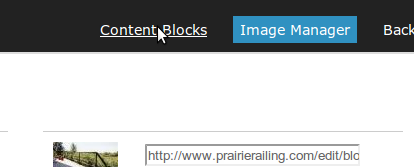

This Page will show you how to add images to your web pages using the content manager.
First, select Image Manager at the top of the content manager main screen
You will find a list of images you have uploaded there. Select the image you want to add to the page, and select it. The background of the image address bar will change to blue when it is highlighted. Right click and selct copy
Select Content Blocks at the top of the page
Select the page you want to add the image to
Select the spot where you want the image to go. The example show placing the image into a table.
Select the image icon in the menu bar of the content editor
Add the image to the page.
Paste in the image url
Set the width of the image as you want it to appear in the page
Alternative text is text that will appear if your image does not for some reason.
Set horizontal and vertical spaces so surrounding text does not border right onto the image.
Set alignment if you want to place the image within a textual paragraph.
Experiment with these features to get familiar with how they work.
Save the image to the web page by clicking on the OK button.
Remember to back up your work often. This allows you to make mistakes that don't need to be costly lessons to fix.